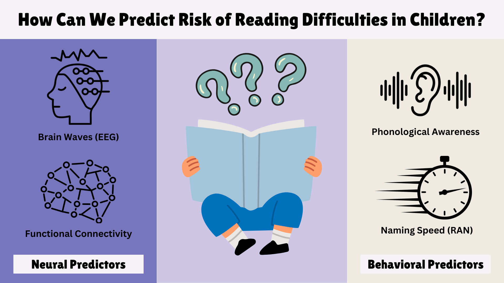

About
Hello there! I am a PhD student in Communication Sciences and Disorders at Northwestern University. I am a member of the Language, Education, and Reading Neuroscience (LEARN) Lab, supervised by Dr. Elizabeth Norton. My research focuses on understanding the processes and mechanisms underlying reading development, with a specific interest in identifying behavioral and neurobiological predictors of reading difficulties in children. [My CV]
Education
PhD in Communication Sciences and Disorders, Northwestern University,
2023 - present
BA in Psychology, Seoul National University,
2019 - 2023
BA in Linguistics, Seoul National University,
2019 - 2023
Research Interests

- Neurobiological and behavioral predictors of reading difficulties
- Processes and mechanisms underlying reading in the brain
- Development of decoding ability and reading fluency in children
Research Projects
| 2024 | Reading, Education, and Development (READ) Lab (PI: Dr. Mercedes Spencer)
Conducted meta-analysis of executive function skills in children with Specific Reading Comprehension Deficit |
| 2024 | Language, Education, and Reading Neuroscience (LEARN) Lab (PI: Dr. Elizabeth Norton)
Conducted literature review of children's self-perceptions of their reading skill |
| 2023 | Language, Education, and Reading Neuroscience (LEARN) Lab (PI: Dr. Elizabeth Norton)
Established a system utilizing an AI speech recognition program (Whisper) to automatically transcribe child speech |
| 2023 | BA Thesis, Psychology (Advisor: Dr. Sung-Ryong Ko)
Title: "The relationship between reading fluency and attentional control in bilinguals reading code-switched text" |
| 2022 | BA Thesis, Linguistics (Advisor: Dr. James Whang)
Title: "The role of phonological processing skills on the comprehension of foreign-accented speech" |
| 2021 | Undergraduate Independent Study Program Project (Advisor: Dr. Sung-Eun Lee)
Title: "An ERP analysis of L1 Korean speakers' processing of foreign-accented speech" |
| 2021 | Independent Research Program Project (Advisor: Dr. Sung-Eun Lee)
Title: "Indirect honorifics in Korean: A linguistic study using neuroscience and experimental psychology methodology" |
| 2019-2023 | Brain & Humanities Lab (PI: Dr. Sung-Eun Lee)
Ran EEG experiments and analyzed behavioral and ERP data |
Publications
| under review | Oh, J., Kim, J., Kiaer, J., Kang, J., Oh, J., & Lee, S. The Ungrammatical Brain: A P600 Event-Related Potential Study on the Processing of Korean Indirect Honorifics. Neuroimage. [paper] |
Talks
| 2021 | "Indirect Honorifics in Korean: A Linguistic Study Using Brain Science and Experimental Psychology Methodology". Poster at Seoul National University Independent Research Program Symposium; Seoul, South Korea; January 2022. [poster] |
Honors & Awards
| 2023 | Seoul National University President's Award
Recognized as the highest-ranking graduate (4.0/4.0 GPA) out of 124 peers |
| 2022 | Seoul National University Best Thesis Award
Awarded for Linguistics BA Thesis |
| 2021 | Seoul National University Outstanding Paper Award
Awarded out of 24 research teams for Indepedent Study Program project |
| 2019-2021 | Seoul National University Merit-Based Scholarship
Awarded tuition support for outstanding academic achievement |
Grants & Fellowships
| 2022-2023 | Kwanjeong Scholarship ($22,000)
Selected as fellow by the Kwanjeong Foundation in South Korea |
| 2021 | Seoul National University Undergraduate Independent Study Grant ($500) |
| 2021 | Seoul National University Independent Research Grant ($3,500) |
Teaching
At Northwestern University (TA)
| 2024 | CSD 373: Introduction to Learning Disabilities (Instructor: Dr. Mercedes Spencer) |
| 2024 | CSD 392: Language Development and Usage (Instructor: Dr. Elizabeth Norton)
Guest Lecture: "Theories of Dyslexia" [slides] |
| 2023 | CSD 456: Clinical Neuroanatomy & Physiology (Instructor: Dr. Belma Hadziselimovic) |